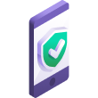
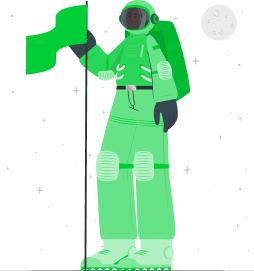
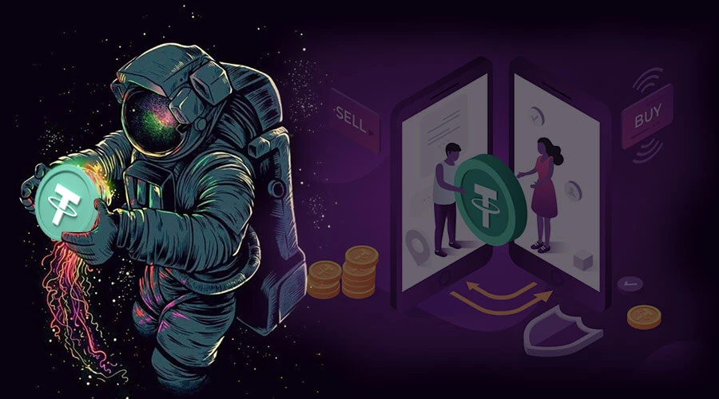
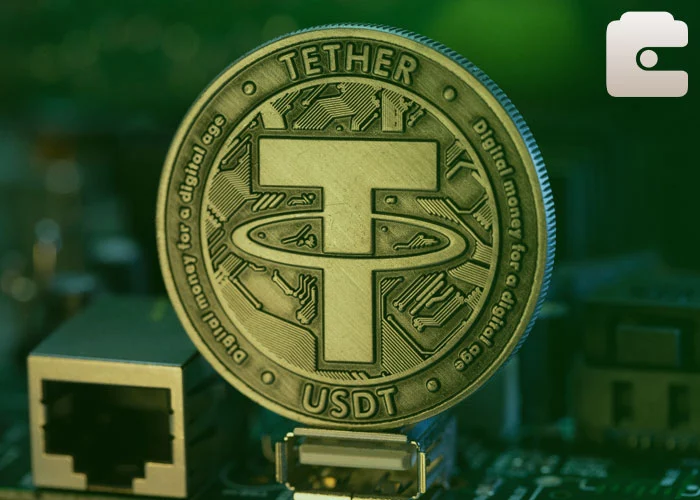
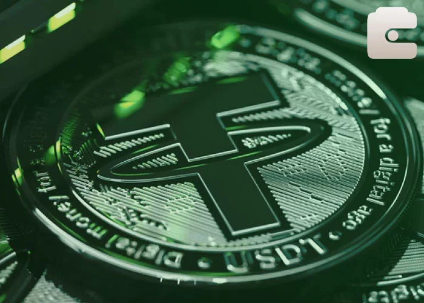
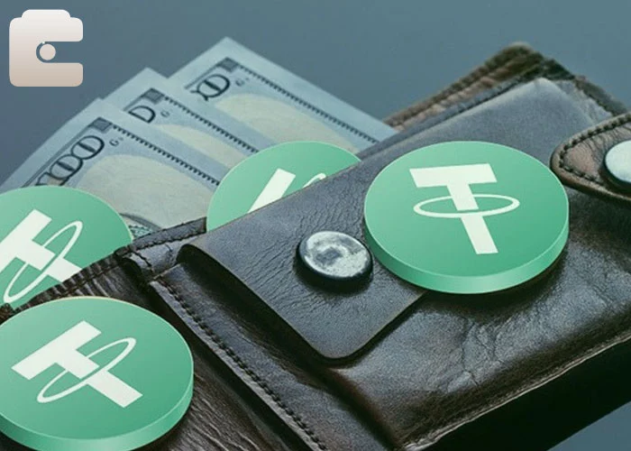
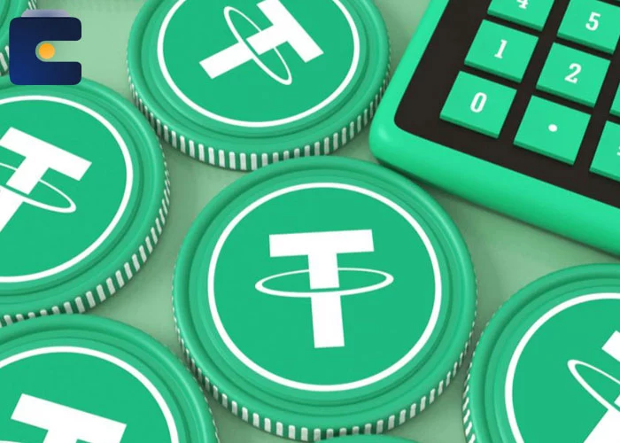
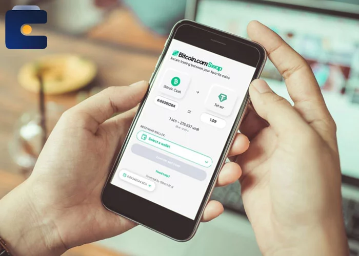

آیا میدانید در صورتی که عضو صرافی کیف پول من باشید و احراز هویت خود را تکمیل کرده باشید میتوانید با ارسال هر نظر برای ما ارز دیجیتال دریافت نمایید ؟
کافیست بر روی گزینه ارسال نظر کلیک کنید و سپس فرم مورد نظر را پر کرده و بروی دکمه ثبت نظر کلیک نمایید ، سپس 15 ثانیه در این صفحه حضور داشته باشید. نظر شما با موفقیت ثبت و با تایید کارشناسان ما هدیه رمز ارز برای شما واریز میگردد. این فعالیت را میتوانید روزانه انجام دهید و هر روز نیز هدیه دریافت کنید.

قیمت هر واحد تتر همیشه برابر با یک دلار آمریکا در سرتاسر دنیاس " 1$ = 1 USDT " و به همین دلیل همیشه با نرخ دلار سنجیده می شود . بدون شک خرید تتر می تواند سرمایه شما را مطابق با افزایش دلار در شرایط بحرانی بازار حفظ کند .
ویژگی های برتر تتر نسبت به دلار
1- خرید تتر و همچنین فروش تتر به صورت 24 ساعته است ، اما در مورد دلار اینگونه نیست و شما در ساعتی از روز فقط می توانید از طریق صرافی ها آن را به فروش برسانید.
2- تتر بر خلاف دلار دارای تاریخ مصرف نیست و نیاز به تعویض اسکناس ندارد ،همینطور که میدانید پول آمریکا دارای تاریخ است و برای عوض کردن آن نیاز به پرداخت کارمزد می باشد و از همه مهمتر مراحل وقت گیر آن است.
3- نگهداری تتر میلیون ها بار راحت تر از دلار است ، و به سادگی قابل انتقال می باشد. توجه کنید شما هرگز نمی توانید میلیون ها دلار را به راحتی جابجا کنید ، ولی 10 میلیارد تتر را می توانید با چشم بسته جابجا کنید.
4- تتر نیز در سرتاسر دنیا شناخته شده است و به راحتی به هر نوع کالایی قابل تبدیل است .5- تعرفه انتقال صد هزار دلار به یک نقطه دنیا کارمزدی معادل دها میلیون تومان و یا بیشتر دارد اما تعرفه انتقال ده میلیون دلار تتر به هر نقطه دنیا کارمزدی زیر 4 واحد تتر می باشد ( معادل 4 دلار ) .
6- معامله تتر بسیار ساده است ، شما میتوانید صد ها میلیارد تومان تتر را خریداری کنید در حالی که شما در وضعیت فعلی نمی توانید حتی 500 میلیون تومان را تبدیل به اسکناس کاغذی تتر کنید و دچار محدودیت های فراوانی می شود که بانک مرکزی در نظر گرفته است.
7- موقعیت فعلی خودتان را در نظر بگیرید برای خرید تتر و یا فروش تتر نیازی نیست حتی کفش های خود را به پا کنید ، در حالی که برای خرید دلار در بهترین شرایط باید چند خیابانی را طی کنید و این امر نیز زمان گیر است و گاهی نیز با صف های طولانی مواجه می شوید .8- فروش و یا خرید تتر نیاز به سوال و جواب ندارد این در حالیست که در حجم های مختلف اسکناس دلار شما باید چند دقیقه ای را صرف پاسخگویی به سوالات صراف کنید.
9- مشکل سلامت اسکناس وجود ندارد ، این داستانی که ما دلار شما را نمی توانیم قبول نمی کنیم چون گوشه نداره و یا خیلی تا داره در مورد تتر وجود ندارد.
موارد بالا تنها بخش کوچکی از ویژگی های مثبت تتر نسبت به دلار می باشد ، شما بعد از اولین معامله دها مورد دیگر را به راحتی متوجه خواهید شد.
مشاهده بیشتر

خرید تتر Tether - فروش تتر - نگهداری تتر + قیمت لحظه ای آنلاین
Wallet USDT & Buy/Sell Tether ( USDT )خرید ارزان تتر و فروش تتر به قیمت لحظه ای
فروش و خرید ارزان تتر Tether (USDT) با قیمت لحظه ای و بدون کارمزد انتقال در صرافی کیف پول من , بزرگترین و اولین کیف پول اختصاصی ایرانی با پنل کاربری حرفه ای ، تنها کافیست بر روی گزینه ثبت نام کلیک کنید و پروسه احراز هویت را در بازه زمانی 15 دقیقه ای به انجام برسانید ، همچنین با شرکت در ایردراپ کیف پول من می توانید به صورت روزانه تتر رایگان و 50 ارز دیگر را دریافت نمایید ، در صورت هرگونه سوال از چت آنلاین استفاده نمایید.

قیمت لحظه ای خرید تتر
51,564تومان

قیمت لحظه ای فروش تتر
51,214تومان
خدمات کیف پول من برای ارز تتر
کیف پول من | راحت ترین و در دسترس ترین ابزار برای خرید و فروش و انتقالات ارز تتر در ایران با کمترین کارمزد و سریعترین انتقالات و کاملا امن برای خرید و فروش مبالغ کم و زیادسریعانتقالات تتر خود را در کمترین زمان ممکن انجام دهید
قابل اطمینانخرید و فروش ایمن و قیمت های عادلانه در کیف پول من

آسانبا سیستم کاملاً اتوماتیک سریع و ایمن معامله کنید

محاسبه گر قیمت تتر
ارز تتر با دلار آمریکا (USD) پشتیبانی می شود و بصورت USDT نمایش داده می شود. سرمایه گذاران از تتر برای خرید انواع ارز دیجیتال مثل بیت کوین ، اتریوم ، بیت کوین کش ، لایت کوین و غیره استفاده میکنند
خرید تتر
فروش تتر
USDT

IRT
| ⏱ مدت زمان تحویل سفارش | آنی |
| 🎯 سقف خرید و فروش تتر | +5,000,000,000 تومان |
| 🎁 هدیه ثبت نام | +500 هزار تومان |
| 💎 رتبه صرافی در ایران | رتبه نخست |
چگونه تتر بخرم؟
به راحتی و با انجام چهار گام زیر علاوه بر خرید آسان تتر به خانواده بزرگ کیف پول بپیوندید
ثبت نام در کیف پول
در اولین قدم میبایست در کیف پول من ثبت نام کرده و موبایل وایمیل خود را تایید نمایید
فرآیند احراز هویت
برای شروع به کار نیاز است یک بار و در کمتر از 5 دقیقه فرآیند احراز هویت خود را انجام دهید
شارژ حساب تومانی
از طریق درگاه امن بانکی سایت نسبت به واریز وجه خود و شارژ حساب تومانی اقدام کنید
خرید سریع تتر
به سادگی بیت کوین یا هر ارز دیجیتال دیگری را که تمایل دارید را در کیف پول امن خود دریافت کنیدرتبه دوم دنیا در تعداد رمز ارز قابل معامله
پشتیبانی بـیش از 2,000 ارز دیجیتال
هیمن حالا به خانواده 1 میلیونی کیف پول بپیوندید
خرید تتر و معرفی Tether

تتر یا (Theter) یکی از پرکاربردترین ارزهای دیجیتالی است که در اوایل سال ۲۰۱۴ میلادی وارد دنیای کریپتوکارنسی ها شد. این ارز دیجیتال در ابتدا با نام ریل کوین (Realcoin) پا به این عرصه گذاشت اما کمی بعدتر، نام این رمزارز توسط شرکت iFinex که مالک اصلی ریل کوین بود به تتر تغییر پیدا کرد. این شرکت، مالک صرافی بیت فینیکس (Bitfinex) که یکی از بزرگ ترین صرافی های دنیا است نیز می باشد. تتر در واقع یک استیبل کوین است که مهم ترین و اصلی ترین ویژگی آن، در امان بودن از تمام نوسانات منفی و مثبت بازار ارزهای دیجیتال است. در واقع، تتر ابزاری است که موجب کنترل عدم پایداری قیمت ها در معاملات رمز ارزها شده و بدین منظور نیز مورد استفاده قرار می گیرد. به همین خاطر می توان نتیجه گرفت تتر نه تنها یک ارز دیجیتال بلاکچین محور بوده و از تمام امکانات و قابلیت های رمزارزها برخوردار است، بلکه همانند ارزهای فیات (مثل دلار، یورو و ...) دارای قیمت ثابتی بوده و نوسانات بازار روی آن تاثیرگذار نیست. برای خیلی از کاربران عزیز سایت کیف پول من و کسانی که قصد فعالیت در بازار ارزهای دیجیتال را دارند همواره این سوال مطرح است که چگونه رمزارز تتر از نوسانات قیمتی در امان بوده و همواره از قیمت یک دلار برخوردار است؟ چنانچه تمایل به اطلاع از چرایی این موضوع دارید، بخش بعدی را مطالعه نمایید.
آشنایی مقدماتی با تتر USDT
در حقیقت علت اصلی این که ارز دیجیتال تتر دچار نوسان قیمتی نمی شود، این است که ارزهای فیات پشتوانه آن هستند. به طوری که براساس ادعای شرکت آی فینکس که سازنده و اداره کننده رمزارز تتر است، همواره به اندازه تمام توکن های در گردش تتر در بلاکچین، این شرکت دلار آمریکا یا سایر ارزهای فیات دیگر را بسته به نوع خرید تتر با آن کنار می گذارد. این یعنی اگر شما مقدار 10 تتر از سایت کیف پول من خریداری کرده و در کیف پول تان نگهداری کرده یا با آن رمزارزهای دیگر را خریداری نمایید، شرکت آی فینکس مبلغ 10 دلار را در موجودی حساب بانکی مخصوص به این ارز دیجیتال شارژ می کند. به این ترتیب به ازای هر خرید تتری که توسط کاربران انجام می شود، یک تتر جدید ساخته شده و مبلغ آن به صورت دلار یا سایر ارزهای فیات ذخیره می شود. این ادعا در طول این سال ها همواره توسط بازرسان و ناظران دنیای کریپتوکارنسی ها بررسی شده و صحت آن نیز تائید شده است. محبوب ترین و اصلی ترین توکن در بلاکچین تتر، USDT نام دارد که پشتوانه آن دلار آمریکاست. توکن USDT را می توان دلار دیجیتالی نامید چرا که ارزش آن دقیقاً یک دلار بوده و در صرافی ها نیز به عنوان دلار مورد استفاده کاربران مختلف قرار می گیرد. شایان ذکر است توکن EURT نیز به همین شکل بوده و یورو دیجیتالی می باشد که البته کاربرد آن در معاملات کمتر از USDT است. جالب است بدانید شرکت آی فینکس به تازگی توکن XAUT را که با پشتوانه طلا کار می کند وارد بازار رمزارزها کرده است. این توکن نسبت به توکن ارزهای فیات کمتر شناخته شده و کمتر مورد معامله و استفاده قرار می گیرد. در این بخش، کلیتی از نوع کارکرد تتر و شکل آن در بازار رمزارزها را به شما عزیزان و کاربران گرامی سایت کیف پول من توضیح دادیم. در ادامه نیز قصد داریم به کاربردها، ویژگی ها و بهترین کیف پول های ارز دیجیتال تتر اشاره نماییم. همچنان همراه ما باشید.
کاربرد تتر USDT در معاملات بازار ارزهای دیجیتال

تمام افرادی که در بازار کریپتوکارنسی ها فعالیت می کنند، مایلند از افزایش قیمت ارزهای دیجیتال این مارکت کسب سود نمایند. برای این افراد همواره این دغدغه مطرح بوده که کدام ارز دیجیتال قیمتی ثابت دارد تا با استفاده از آن بتوانیم سایر رمزارزها را نیز خریداری نماییم؟ همان طور که می دانید، تمام ارزهای دیجیتال دارای نوساناتی هستند که قیمت آن ها را افزایش یا کاهش می دهد. در این بین، برخی رمزارزها نوسانات کمتری را تجربه کرده و برخی دچار پامپ (رشد شدید در کوتاه مدت) یا دامپ (افت شدید در کوتاه مدت) می شوند. تتر رمزارزی است که با پشتوانه پول فیات وارد بازار کریپتوکارنسی ها شده و از بدو ورود تا کنون با قیمت یک دلار معامله می شود. وقتی شما تتر خریداری می کنید، در واقع یک سپرده بانکی خواهید داشت که هیچ سود و زیانی به آن تعلق نمی گیرد. با این وجود، چرا از تتر به عنوان پرکاربردترین ارز دیجیتال یاد می شود؟ در واقع تتر بسیار شبیه ارزهای فیات است. همان طور که شما برای خرید یک لباس یا هر دارایی دیگر از واحدهای مشخصی مثل تومان یا دلار یا یورو و ... استفاده می کنید، در بازار کریپتوکارنسی ها نیز بایستی از یک واحد مشخص استفاده نمایید. مثلاً برای خرید ارز دیجیتال ریپل با نماد XRP، بایستی در ابتدا مقداری تتر با ارز فیات (دلار، تومان یا ...) خریداری کرده و پس ریپل موردنیازتان را با استفاده از تتری که در اختیار دارید خریداری نمایید. به این شکل می توان تتر را واحد پولی بدون نوسان در بازار رمزارزها دانست.
البته روش های دیگری نیز برای خرید ارزهای دیجیتال است. مثلاً شما می توانید به جای پرداخت تتر برای خرید ریپل، از پرداخت بیت کوین استفاده نمایید. به طوری که ابتدا اقدام به خرید بیت کوین و سپس معادل آن را به ریپل تبدیل می کنید. در این صورت، شما با دو رمزارز نوسان دار همراه خواهید شد و این یعنی سود یا زیان شما دیگر به یک رمزارز بستگی ندارد. اگر ریپل را با تتر خریداری کنید، چنانچه قیمت ریپل افزایش پیدا کند شما سود می کنید و اگر کاهش پیدا کند نیز ضرر خواهید کرد. چرا که تتر هیچ نوسانی نداشته و تنها نوسانی که باعث سود و زیان شما می شود، نوسان ارز دیگری است که قصد خرید یا فروش آن را دارید. در مقابل، وقتی ریپل را با بیت کوین خریداری می کنید، اگر ریپل برای مثال 10 درصد سود کند اما بیت کوین 15 درصد زیان داشته باشد، شما نه تنها سود نکرده اید بلکه دچار زیان هم شده و این یعنی از دو جناح با نوسانات بازار درگیر شده اید. به همین خاطر اغلب تریدرها و سرمایه گذاران بازار، از تتر برای خرید ارزهای موردنظر خود استفاده می کنند تا تنها نوسانی که سود یا زیان شان را مشخص کند، نوسانات همان ارز باشد.
ویژگی های مثبت تتر Tether

ارز دیجیتال تتر دارای مزیت های بسیار زیادی است که در این قسمت به گوشه ای از آن ها اشاره کرده ایم.
مدت زمان انجام تراکنش ها
یکی از بهترین مزیت هایی که تتر نسبت به سایر رمزارزها دارد، زمان انجام تراکنش های آن است. به طوری که اگر بخواهید موجودی تان در صرافی ها را به صورت دلاری واریز یا برداشت نمایید، ممکن است ساعت های طولانی یا حتی روزها زمان برای پردازش و انجام آن نیاز داشته باشید. این وضعیت برای تتر وجود ندارد و واریز و برداشت تتر در صرافی ها به صورت آنی و در لحظه (نهایتاً با چند دقیقه تاخیر) انجام می شود. این مزیت تتر یک فاکتور عالی است؛ چرا که تمام سرمایه گذاران و تریدرهای بازار ارز دیجیتال به دنبال خرید یا انتقال هرچه سریع تر دارایی هایشان هستند تا بتوانند از نوسانات قیمتی در لحظه استفاده کنند.
کارمزد تراکنش در شبکه
برای خرید رمزارزها در صرافی های مختلف، به پول نیاز است و اگر پولی که در اختیار شماست توسط صرافی پشتیبانی نشود، بانک و صرافی از شما کارمزدهای سنگینی را دریافت می کنند. تتر به عنوان یک واحد پولی دیجیتالی، کارمزد بسیار پایینی را برای کاربران در نظر گرفته و برای انتقال بین کیف پول ها هیچ کارمزدی را از آن ها کم نمی کند. به همین خاطر در شبکه تتر، کارمزدهای بسیار اندکی از کاربران دریافت می شود که در مقایسه با کارمزد سایر شبکه ها مثل شبکه سوییفت، بسیار ناچیز است.
دور بودن از نوسانات قیمتی
ثبات قیمتی تتر قابلیتی است که این ارز دیجیتال را به یک رمزارز منحصر به فرد و یونیک تبدیل کرده است. به طوری که این ارز دیجیتال در میان دیگر ارزهای دیجیتال به بیثباتی و نوسان های قیمتی زیاد مشهورند، در ثبات کامل به سر برده و قیمت آن از ابتدا تاکنون یک دلار بوده است. در واقع این ثبات قیمتی باعث شده از تتر به عنوان یک واحد پولی دیجیتال در فضای رمزارزها یاد شود و یک پایه ثابت برای معاملات رمزارزها به شمار رود.
حفظ دارایی کاربران
تتر می تواند از دارایی های شما محافظت کند. به طوری که گاهی اوقات در شرایطی که بازار رمزارزها دچار نوسانات قیمتی شدید می شود، بهتر است دارایی های رمزارزتان را فروخته و به تتر تبدیل کنید. وقتی دارایی شما در قالب تتر باشد، در امنیت کامل بوده و دچار نوسانات قیمتی نخواهد شد. به این ترتیب تتر به شما کمک می کند در مواقعی که وضعیت مارکت ناپایدار است، از دارایی هایتان مراقبت کنید.
کیف پول تتر Tether

حال که تا حدودی با رمزارز تتر و چگونگی کارکرد آن آشنا شدید، نوبت آن است از فهرست کیف پول هایی که از این ارز دیجیتال معتبر و محبوب پشتیبانی می کنند نیز مطلع شوید. بهترین کیف پول های تتر در سال جاری به شرح زیر می باشد:
کیف پول کوینومی
کیف پول کوینومی یکی از شناخته شده ترین کیف پول های موبایلی است که برای سیستم عامل اندروید و iOS منتشر شده است. این کیف پول غیر متمرکز قابلیت ذخیره سازی و تبدیل بسیاری از ارزهای دیجیتال از جمله تتر را می دهد. شایان ذکر است کیف پول کوینومی از هر سه نوع توکن تتر پشتیبانی می کند.
کیف پول اتمیک
یکی از کیف پول هایی که به تازگی وارد عرصه رمزارزها شده و در طول مدت کوتاه حضور خود توانسته میلیون ها کاربر را به خود جذب نماید، کیف پول اتمیک است. اصلی ترین هدف این کیف پول که تمام تمرکز توسعه دهندگانش بر روی آن است، امنیت و حفظ حریم خصوصی کاربران است. این کیف پول غیرمتمرکز از امکانات فوق العاده ای بهره مند است که یک نمونه از آن پشتیبانی از بیش از 300 رمزارز دیجیتال می باشد. شما با استفاده از کیف پول اتمیک برای نگهداری تتر می توانید تمام موجودی تتر خود را به آن منتقل کرده و در بستر کیف پول به رمزارزهای دیگر تبدیل کنید.
کیف پول لجر نانو اس
کیف پول های سخت افزاری، ابزارهایی هستتند که مخصوص نگهداری ارز دیجیتال ساخته شده و در قالب فلش و قطعات دیگر می باشند. یکی از محبوب ترین کیف پول های سخت افزاری حال حاضر دنیا، کیف پول لجر نانو اس است. این کیف پول سخت افزاری تاکنون توانسته یک میلیون کاربر را به خود جذب نماید. کیف پول لجر نانو اس بالاترین سطح امنیتی را برای حفاظت از دارایی های کاربران ایجاد می کند. در واقع افرادی که دارایی زیادی از تتر دارند و به دنبال یک بستر امن و کاملاً مطمئن برای نگهداری آن هستند می توانند از این کیف پول برای نگهداری تترشان استفاده نمایند. شایان ذکر است قیمت این کیف پول ها در ایران کمی بالا بوده و به همین خاطر کاربران کمی به استفاده از آن می پردازند.
کیف پول Exodus
آن دسته از کاربرانی که از پلت فرم ویندوز برای فعالیت در حوزه ارزهای دیجیتال استفاده می کنند می توانند از کیف پول Exodus که یک کیف پول دسکتاپی است بهره مند شوند. این کیف پول محبوب، قابلیت نگهداری توکن های ERC20 را دارا بوده و از رابط کاربری بسیار ساده و جذابی برخوردار است. کیف پول Exodus از حیث امنیت نیز در سطح قابل قبولی بوده و قابلیت تعویض ارزهای دیجیتال با یکدیگر در آن وجود دارد.
کیف پول ایرانی تتر | خرید و فروش تتر به ریال و تومان در ایران
یکی از مطمئن ترین کیف پول هایی که شما عزیزان می توانید از آن برای خرید، فروش و نگهداری تتر استفاده نمایید، کیف پول من است. پلت فرم کیف پول من با آدرس رسمی KifPool.me یک کیف پول کاملاً ایرانی است که بستری عالی جهت خرید و فروش تتر در ایران با واحد پولی ریال را فراهم کرده است. به همین خاطر چنانچه قصد انتقال موجودی تتر خود به یک کیف پول امن و ایرانی را دارید، کیف پول من در اختیار شماست. این کیف پول ایرانی تتر دارای نماد اعتماد الکترونیکی بوده و از تیم پشتیبانی 24 ساعته برخوردار است. جهت استفاده از امکانات کیف پول من، همین حالا عضو سایت شوید و اقدام به نگهداری رمزارزهای مختلف خود از جمله تتر نمایید.
با تتر، مهمترین استیبل کوین بازار ارزهای دیجیتال بیشتر آشنا شوید!

تتر که با نماد USDT در بازار رمزارزها معامله میشود، نوعی استیبل کوین دارای پشتوانه ارز فیاتی است که مهمترین آنها دلار آمریکا به شمار میآید. این استیبل کوین از زمان عرضه خود یعنی سال 2014 تاکنون همواره قیمت ثابتی داشته و در بازار ارزهای دیجیتال ارزش هر یک تتر 1 دلار بوده است. عمده تریدرها و معاملهگران دنیای رمزارزها از این استیبل کوین برای حفظ سرمایه به هنگام نوسانات شدید منفی بازار کمک میگیرند. تتر به دلیل دارا بودن ارزش ثابت، بهترین گزینه برای مبادله با سایر رمزارزهاست و دقیقا به همین علت است که در این مدت 8 ساله، این استیبل کوین محبوبیت خود را از دست نداده است. شما با خرید تتر در همین صفحه، از بسیاری از خدمات وبسایت کیف پول من نظیر پشتیبانی 24 ساعته در صورت بروز هرگونه مشکلی، بهرهمند خواهید شد.
مزایای خرید تتر
شاید این سوال برای شما مطرح شود که چرا بایستی به دنبال خرید تتر باشیم، در حالی که این رمزارز همواره دارای قیمت ثابتی است و خرید آن هیچ سودی عاید خریدار نمیکند؟
پاسخ به این سوال در گرو بررسی مزایای این ارز دیجیتالی است که مهمترین مزیت آن در ایمن نگه داشتن سرمایه شما به هنگام نوسانات شدید منفی بازار رمزارزهاست. تصور کنید که شما یک ارز دیجیتالی را با قیمت 10 هزار دلار خریداری کردهاید و پس از مدتی به دلیل نوسانات مثبت، قیمت و ارزش این رمزارز به 35 هزار دلار رسیده است و شما در این حین، آن را به تتر تبدیل کرده و 35000 واحد تتر ذخیره میکنید. سپس ارزش ارز دیجیتالی قبلی سقوط کرده و به 15 هزار دلار میرسد. در این شرایط سرمایه شما همان 35 هزار دلار باقی میماند و متضرر نمیشوید و همچنان میتوانید به راحتی تترهای خود را به ارزهای دیجیتالی دیگر تبدیل کنید.
از دیگر دلایل محبوبیت تتر، انتقال سریع آن است. در حالت عادی اگر شما بخواهید مبلغ قابل توجهی دلار را از صرافیهای خارجی دریافت کنید، یک پروسه یک الی چهار روزه را باید پشت سر بگذارید؛ در حالی که این مطلب درباره تتر صدق نمیکند و بسیاری از تریدرها که به دنبال کسب سودهای کلان از طریق معامله ارزهای دیجیتال هستند، به دلیل سهولت در انتقال تتر به سمت آن جذب شدهاند. البته ناگفته نماند که شما به هنگام انتقال تتر از یک کیف پول به کیف پول دیگر، کارمزدی پرداخت نمیکنید؛ در حالیکه اگر برای تراکنشات خود از شبکه مالی سوییفت کمک بگیرید، برای هر تراکنش بایستی 30 دلار کارمزد پرداخت کنید که مبلغ قابل توجهی به نظر میرسد.
خرید و فروش تتر در بهترین صرافی ایرانی

مطمئنا با توجه به وجود تحریمهای گسترده مالی، به هنگام انجام معاملات در صرافیهای خارجی چون بایننس، گیت و غیره به دلیل هویت ایرانی با مسدود شدن حساب و بلوکه شدن دارایی خود مواجه شدهاید. تیم ما در کیف پول من با هدف کمک به کاربران ایرانی در سالهای گذشته با پشتیبانی از 1500 ارز دیجیتال توانسته در لیست ده صرافی برتر جهانی به لحاظ دارا بودن تنوع رمز ارز قرار بگیرد و همچنین با توجه به بازخورد مثبت کاربران ایرانی به هنگام دریافت خدمات، امروزه بیش از یک میلیون کاربر فعال را به سمت خویش جذب کرده است. همچنین توانستهایم رتبه نخست را در بین صرافیهای رمزارز داخلی از آن خود کنیم.
از مزایای خرید تتر در صرافی کیف پول من میتوان به امکان خرید به تومان و همچنین نگهداری رایگان اشاره کنیم. شما در هر ساعت از شبانهروز که سوال یا مشکلی داشته باشید، میتوانید از بخش پشتیبانی با کارشناسان ما در ارتباط باشید و همچنین به طور 24 ساعته به ترید ارزهای دیجیتالی مختلف بپردازید. اگر قصد خرید تتر با آسانترین روش ممکن و به صورت کاملا قانونی را دارید، فقط کافی است در کیف پول من حساب کاربری ایجاد کنید و پس از آن از معاملات ارزهای دیجیتال لذت ببرید و کسب سود کنید.
سوالات متداول
لیستی از پرسش و پاسخهای که شاید با آن مواجه شویدتتر چیست؟
تتر یا (Theter) یکی از پرکاربردترین ارزهای دیجیتالی است که در اوایل سال ۲۰۱۴ میلادی وارد دنیای کریپتوکارنسی ها شد. در واقع، تتر ابزاری است که موجب کنترل عدم پایداری قیمت ها در معاملات رمز ارزها شده و بدین منظور نیز مورد استفاده قرار می گیرد. به همین خاطر می توان نتیجه گرفت تتر نه تنها یک ارز دیجیتال بلاکچین محور بوده و از تمام امکانات و قابلیت های رمزارزها برخوردار است، بلکه همانند ارزهای فیات (مثل دلار، یورو و ...) دارای قیمت ثابتی بوده و نوسانات بازار روی آن تاثیرگذار نیست.
کاربرد تتر USDT در معاملات بازار ارزهای دیجیتال؟
تتر بسیار شبیه ارزهای فیات است. همان طور که شما برای خرید یک لباس یا هر دارایی دیگر از واحدهای مشخصی مثل تومان یا دلار یا یورو و ... استفاده می کنید، در بازار کریپتوکارنسی ها نیز بایستی از یک واحد مشخص استفاده نمایید. مثلاً برای خرید رمزارز ریپل با نماد XRP، بایستی در ابتدا مقداری تتر با ارز فیات (دلار، تومان یا ...) خریداری کرده و پس ریپل موردنیازتان را با استفاده از تتری که در اختیار دارید خریداری نمایید. به این شکل می توان تتر را واحد پولی بدون نوسان در بازار رمزارزها دانست.
بهترین کیف پول تتر در ایران؟
سایت کیف پول من بهترین پلت فرمی است که به شما امکان نگهداری تمامی ارزهای دیجیتال را داده و با انتقال سریع دارایی هایتان، ضمانت نگهداری و پشتیبانی 24 ساعته را نیز برای کاربران خود در نظر می گیرد. این کیف پول دارای نماد اعتماد رسمی بوده و از قابلیت دسترسی هوشمند برخوردار است.
خرید و فروش تتر در ایران؟
پلت فرم کیف پول من با آدرس رسمی KifPool.me یک کیف پول کاملاً ایرانی است که بستری عالی جهت خرید و فروش تتر در ایران با واحد پولی ریال را فراهم کرده است.
ویژگی های مثبت تتر چیست؟
انجام سریع تراکنش ها - کارمزد بسیار اندک تراکنش در شبکه - دور بودن از نوسانات قیمتی - حفظ دارایی کاربران
نظرات کاربران
مقدار 2,500,000 ارز بی بی دوج
مقدار 500,000 ارز کیشو
مقدار 500,000 ارز کت گرل

کاظم احمدی تبار

تنها صرافی که در ایران میتونی بلیط هواپیما و خرید خودرو و شارژ تلفن همراه انجام بدی، صرافی نوین کیف پول من هست
محمد مهدی خلفی
باسلام تتر به خاطر ثبات قیمت مورد توجه کاربران بسیاری درایران قرار گرفته است
سیمین تاج روشن قیاس
باسلام ارز دیجیتال تتر یکی ازمطمعن ترین ارزهای دیجیتال میباشد که هرگز پشتوانه خود رااز دست نمیدهد
کاظم احمدی تبار
صرافی کیف پول من یک صرافی بی نقص و بی رقیب در بازار کریپتوکارنسی در داخل کشور هست که از 2000 رمزارز نیز پشتیبانی می کند
کریم محمدی
من ازصرافی کیف من خیلی راضیم عالی هست
فرزانه دهنوی
با کیف پول من می تونید قبض هاتون پرداخت کنید
مهدی شیزری
کیف پول من بزرگترین واولین صرافی ارزهای دیجیتال در ایران باتنوع بیش از دوهزار وپا نصدرمز ارز فعال
امید قمری نژاد
تتر تنها ارزی هستش که بر اساس دلار قیمت گذاری میشود که در تیران جزو راحت ترین سرمایهگذاری ها روی دلار است که با هر مبلغی میتوان انجام داد
حسین شیزری
ارز دیجیتالی تتر پرکاربرد ترین رمز ارز بازار کریپتو میباشد که بیشترین معاملات روزانه را به همراه بیتکوین دارا میباشد
فرزانه دهنوی
قیمت لحظه ای تتر در این کیف پول چک کنید
ارسال نظر
قوانین :
۱- حداقل شما باید ده کلمه نظر ارسال کنید
۲- جوایز ارسال نظر بعد از تایید کارشناسان ما صورت می پذیرد.
۳- از ارسال نظر های تکراری و کپی شده پرهیز کنید زیرا جایزه تعلق نمیگیره
۴- بعد از ارسال نظر چند ثانیه درون صفحه باشید حدود ۱۰ ثانیه تا پروسه ارسال انجام شود.
۵- در صورتی که درون این صرافی احراز هویت نکرده باشید جایزه به شما تعلق نمی گیرد

دانلود اپلیکیشن موبایل کیف پول
شما میتوانید در تمامی مارکت های موجود اپلیکیشن کیف پول من را دانلود کرده و در موبایل اندرویدی خود استفاده کنید

کیف پول من در اینستاگرام
دنبال کنید


آیا میدانید کیف پول من برترین کیف پول ایرانی ارز دیجیتال می باشد ؟
آیا میدانید در کیف پول من قادر به خرید و فروش بیش از 1,500 رمز ارز متفاوت هستید ؟
آیا میدانید کیف پول من بیش از 1 میلیون کاربر فعال دارد ؟
آیا میدانید در کیف پول من قادر هستید با ارز دیجیتال شارژ موبایل و بسته اینترنت بخرید و کلیه قبوض خود را پرداخت کنید ؟
کیف پول من ، اولین سامانه نگهداری ارزهای دیجیتال پیشگام کشور است که با سبک و استانداردهای جدید، سرویسهای نگهداری رمز ارزهای الکترونیک را برای افراد حقیقی و حقوقی آماده کرده است.
شماره تماس:021 - 91306781
آدرس ایمیل:[email protected]
کیف پول من
کیف پولهای برتر
© كيف پول من - اولین سرویس کیف پول اختصاصی رمز ارز ایران .